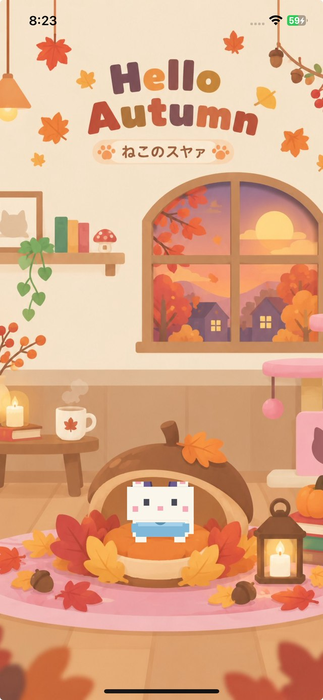
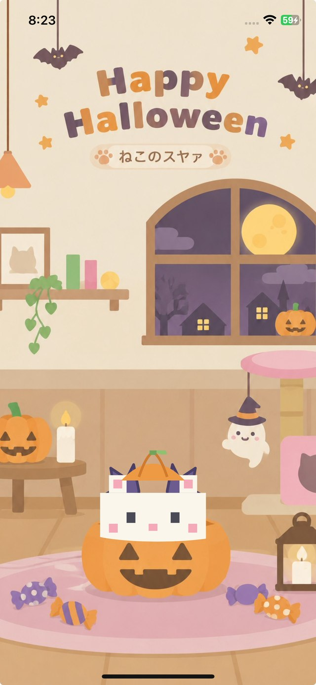

きせつの 絵に すっぽり
あきの どんぐりの おうち、ハロウィンの おばけかぼちゃ、おしょうがつの おもち…。やわらかい タッチの きせつの絵に、ねこが すっぽり おさまって、こちらを みてくれます。絵は そのときの きせつに あわせて じどうで かわります。
きせかえした すがたの まま
ぼうしや ふくを きせた ねこは、そのままの すがたで パネルに はいります。ねこを タップすると、なかまの ねこに こうたい。おきにいりの 子と、おきにいりの きせつで どうぞ。

スクショで かべがみに
がめんを いちど タップすると、ボタンなどの ひょうじが きえて、絵と ねこだけに なります。そのまま iPhoneの スクリーンショットを とれば できあがり。スマホの かべがみ(待ち受け)や ロックがめんに ぴったりの、じぶんの ねこの 1まいが つくれます。くわしい てじゅんは 壁紙の つくりかた の記事 へ。
カメラや 写真の けんげんは つかいません
ほぞんは iPhoneの スクショきのうで おこなうので、アプリが カメラや 写真に アクセスすることは ありません。ちいさな ひとにも あんしんです。

1年じゅう、どれかの きせつが
イベントの 8シーンと、きせつの 4シーン。ぜんぶで 12シーン、いまは どれかな?
🎃 あき と ハロウィン
どんぐりの おうちと、おばけかぼちゃ。あきの ゆうやけと まんげつの 2まい。
🎄 クリスマス と おしょうがつ
ふゆは クリスマスの よると、おもちの おしょうがつ。ぬくぬくの 2まい。
🌸 バレンタイン と はる
はるに むかう、ピンクの やさしい きせつ。ひなまつりの ころから はるの パネルに。
🌻 つゆ と なつ
あめの ひも、あつい ひも、パネルの なかは のんびり。なつやすみの きねんにも。
🍃 はる・なつ・あき・ふゆ
イベントとは べつに、3か月ごとに かわる きせつの パネルが 4まい。ゆきの おうちで ぬくぬくする ふゆなど、いつでも イベントの パネルと ならんで えらべます。
1年じゅう 2つ以上の パネルが 出ていて、きりかえボタンで すきな ほうを えらべます
よくある しつもん
パネルは どこから ひらけますか?
ホーム上部の「おもいで」を ひらいて、「📷 パネル」を タップすると ひらきます。
しゃしんは どうやって ほぞんしますか?
ほぞんボタンは ありません。がめんを タップして ひょうじを けしてから、iPhoneの スクリーンショットで ほぞんします。アプリが カメラや 写真に アクセスすることは ありません。
お金は かかりますか?
かかりません。アプリは 無料で、パネルも そのまま つかえます。
なかまの ねこも 写れますか?
はい。ねこを タップするたびに、なかまの ねこに こうたいします。きせかえした すがたの ままで 写れます。